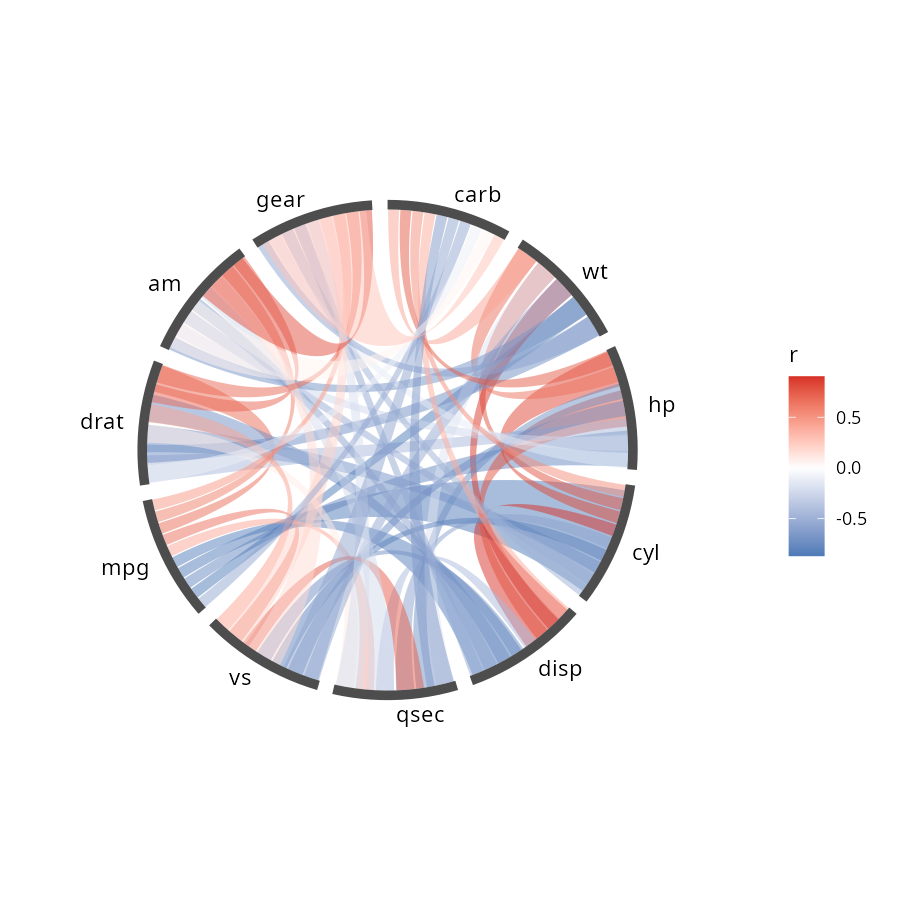
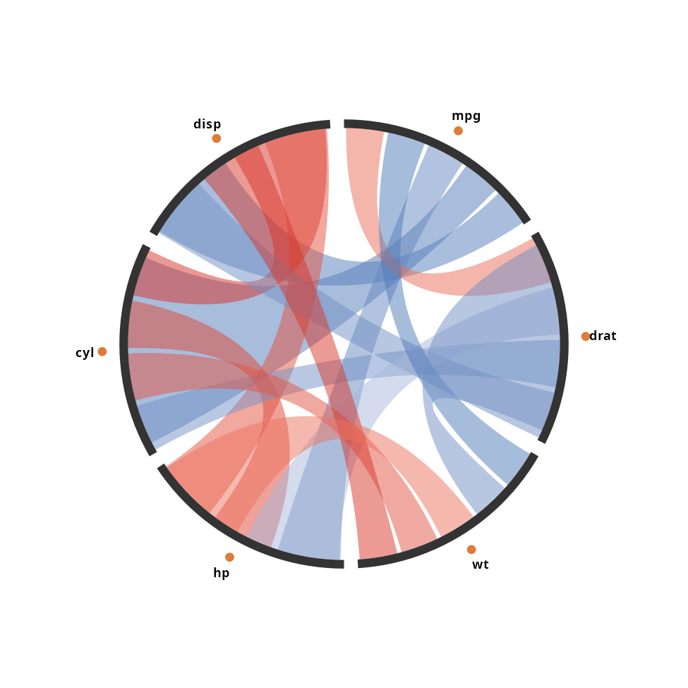
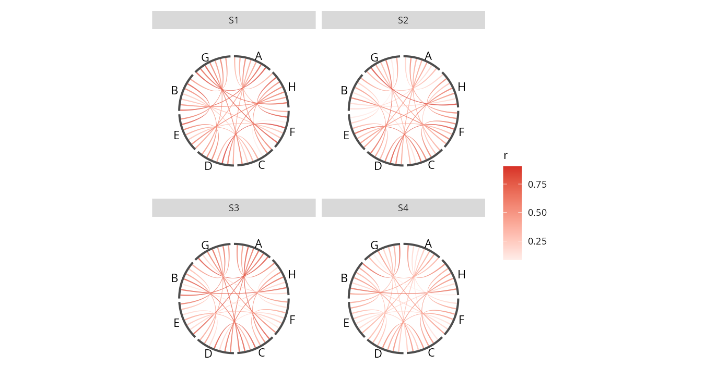
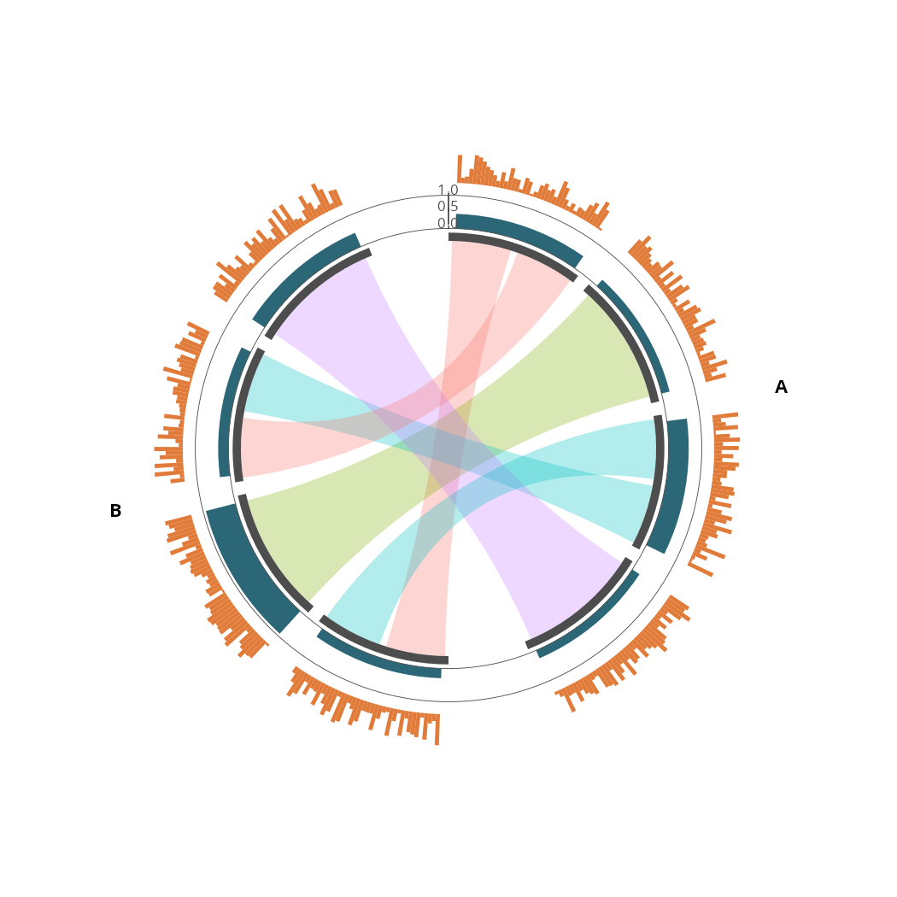
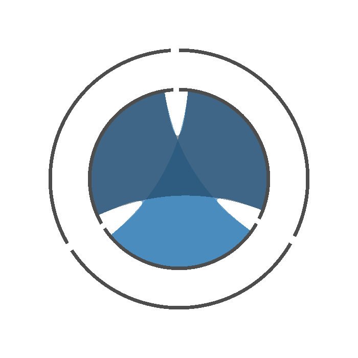
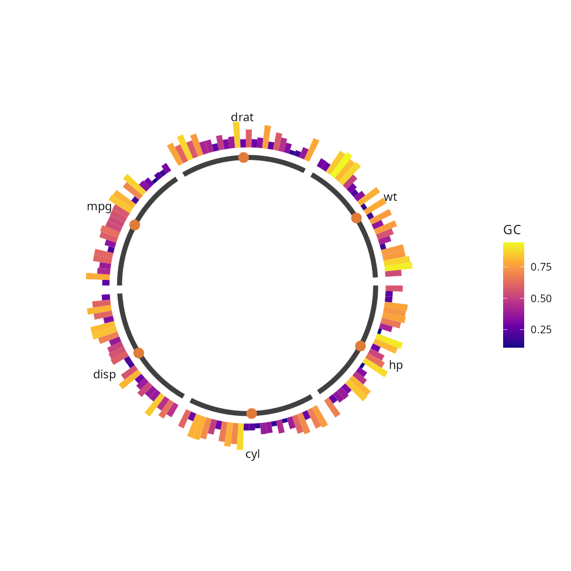

[!一句话版本：ggcircos 先把环形布局算成一张表，弦、轨道、轴都从这张表读数。于是
facet_wrap()、scale_fill_gradient2()、patchwork、saveRDS()这些 ggplot2 的老本行，环形图第一次能直接用。]
上一版最后一次提交停在 2023 年 3 月。今年 10 月推倒重写，版本号才从 0.0.0.9000 走到 0.1.0。
仓库是 2020 年 7 月建的。那时候 ggtreeExtra 刚能往环形进化树上叠图层，我们就想，同一套办法搬到弦图上，应该也能行。
然后这个坑一放就是六年。
卡住我们的，不是画弦。
旧版的问题都写在 DESCRIPTION 里：Imports 16 个包，ggtree、ggtreeExtra、dplyr、ggnewscale、pillar、tibble 都在，弦图的几何直接寄生在进化树的坐标系上，动一处牵连一片。
但依赖多只是症状，真正的毛病是模型错了。
卡在画布上
旧版的环形布局不是一张表，是一块自己管理的画布。
每个图层要画东西，都得现场问一句：这个节点现在落到哪个角度了，问一次算一次，各层算出来的还未必一致。
于是轨道压在节点环上、三条带互相重叠、分面一开就散架，这类问题改不完，因为它不是 bug，是模型决定的。
所以重写的时候，我只守住一件事：先把布局算成一张表。
先算出一张表
我让 ggcircos() 一次把布局算完，落成一张表，layout_nodes() 直接给你看：
library(ggcircos)
library(ggplot2)
layout_nodes(circos_layout(cor(mtcars)[1:5, 1:5], order = "hclust"))
#> id label sector order n_links theta0 theta1 theta width r
#> 1 hp hp all 1 4 0.000000 1.193805 0.5969026 1.193805 1
#> 2 cyl cyl all 2 4 1.256637 2.450442 1.8535397 1.193805 1
#> 3 disp disp all 3 4 2.513274 3.707079 3.1101767 1.193805 1
#> 4 mpg mpg all 4 4 3.769911 4.963716 4.3668138 1.193805 1
#> 5 drat drat all 5 4 5.026548 6.220353 5.6234508 1.193805 1theta0 和 theta1 是节点弧的两端，theta 是弧中点，width 是弧宽，n_links 是度数。layout_links() 再给出每条链接在两端弧里占的槽位。
有了这张表，之后每一层都是普通的 ggplot2 图层，读同一份数据，不再各自去算角度。
图例自己就出来了
ggcircos(cor(mtcars), order = "hclust") +
geom_chord(aes(fill = r)) +
geom_node_arc() +
geom_node_text() +
scale_fill_gradient2(midpoint = 0)
fill = r 就是一个普通的美学映射，scale_fill_gradient2() 直接生效，legend 自己长出来，我不用管它在哪儿（同一件事在 circlize 里要自己调 legend()）。
节点弧我留成默认等宽，链接默认等分。想让弧按值走，加 weight = r，语义和 circlize::chordDiagram() 是一致的。
标准图层直接叠
标准层不经过本包，原样就能叠，前提是每一层自带 data 和 aes。
nd <- layout_nodes(circos_layout(cor(mtcars)[1:6, 1:6], order = "hclust"))
ggcircos(cor(mtcars)[1:6, 1:6], order = "hclust") +
geom_chord(aes(fill = r), alpha = 0.5) +
geom_rect(data = nd, aes(xmin = r, xmax = r + 0.04,
ymin = theta0, ymax = theta1),
fill = "grey20") +
geom_point(data = nd, aes(x = r + 0.12, y = theta),
size = 2.2, colour = "#E07B39") +
geom_text(data = nd, aes(x = r + 0.20, y = theta, label = id),
size = 3.2, fontface = "bold") +
scale_fill_gradient2(midpoint = 0) +
theme_circos(legend.position = "none")
节点环是 geom_rect()，点是 geom_point()，标签是 geom_text()，本包的图层只画了弦。
图本身不挂映射，ggcircos() 只把链接表带在身上，所以裸着写一个 geom_point() 会报缺 x/y。这比旧版那个毛病好：以前弦的列挂在图上，每层都继承它，geom_rect() 一上来就报错，只好每层写一句 inherit.aes = FALSE 躲开。
坐标约定对所有图层统一：x 是半径，y 是弧度。geom_text、geom_rect、geom_tile、geom_segment、geom_jitter、geom_violin、geom_density2d 这些，连同 annotate()，都能直接叠上去。
标签会打架的话，geom_node_text(repel = TRUE) 会沿各自半径往外错开一行，角度不变，所以每个标签还在自己那根辐条上；这里我没有用 ggrepel，它在直角坐标里解冲突，到环上只会把标签排平。
主题、拼图、存盘也照常：
p <- ggcircos(cor(mtcars)) + geom_chord(aes(fill = r)) + geom_node_arc()
p + theme_minimal() + labs(title = "chord") # 换主题
patchwork::wrap_plots(p, p) # 拼图
saveRDS(p, "plot.rds") # 存盘
readRDS("plot.rds") + geom_node_text() # 下周打开接着加层它就是一个普通的 ggplot 对象，我没给它造自有类型，所以 ggplot2 生态里能对它做的事，它都能做。
一次出四个环
circlize 是 base graphics，画出来是一张画布不是一个对象，想让四个环并排，得自己拼画布。这里一个 facet_wrap() 就够了。
set.seed(42)
mk <- function(s) {
x <- matrix(runif(8 * 8), 8, 8)
x <- (x + t(x)) / 2
diag(x) <- 0
d <- as.data.frame(as.table(x))
names(d) <- c("from", "to", "r")
d$sample <- paste0("S", s)
d
}
links <- do.call(rbind, lapply(1:4, mk))
ggcircos(links, order = "hclust") +
geom_chord(aes(fill = r)) +
geom_node_arc() +
geom_node_text() +
facet_wrap(~ sample)
四个 panel，一个 legend。
分面切的是弦，节点环在每个 panel 里完整复制，所以四个环的节点顺序一致，样本之间可以直接对看。多样本比较要的正是这个。
如果每个样本连节点都不一样（各自的基因组、各自的通路、各自的样本点），共享节点环就不成立了。这时候加一个 by =，它指明节点表里哪一列决定“这个节点属于哪个环”，四个环各算各的节点、各排各的序。链接归哪个环看它自己那一列，跨环的链接会被丢掉并提示。
轨道和轴
tracks = 在节点环外声明几条带，geom_track() 往里画：
set.seed(11)
nodes <- data.frame(
id = c(paste0("g", 1:4), paste0("h", 1:4)),
genome = rep(c("A", "B"), each = 4)
)
links <- data.frame(
from = c("g1", "g2", "g3", "g4", "g1", "g3"),
to = c("h1", "h2", "h3", "h4", "h3", "h1")
)
one <- data.frame(id = nodes$id, gc = runif(8, .25, .95))
many <- data.frame(id = rep(nodes$id, each = 40),
depth = runif(8 * 40, .05, .95))
ggcircos(links, nodes = nodes, sectors = "genome",
tracks = c(gc = .16, depth = .16)) +
geom_chord(aes(fill = from), alpha = .3) +
geom_node_arc() +
geom_track(data = one, aes(x = gc), node = id, band = "gc",
geom = "col", fill = "#2B6777",
scales = "fixed", limits = c(0, 1)) +
geom_track(data = many, aes(x = depth), node = id, band = "depth",
geom = "area", fill = "#E07B39",
scales = "fixed", limits = c(0, 1)) +
geom_track_axis(band = "gc", limits = c(0, 1)) +
geom_sector_label() +
theme_circos(legend.position = "none")
内圈 gc 是柱状轨道，一个节点一个 GC 值，柱高就是值。
外圈 depth 是面积轨道，每个节点 40 个值沿弧排开，画出来是覆盖度剖面。
geom = 能取 col、bar、area、tile 这些常规的，也能放 boxplot、violin、density 做分布：violin 把一个节点的一堆值沿弧铺开，宽的地方就是值密的地方，等于横过来的小提琴；density 画同一条轮廓但不填充，于是多个节点的分布能在一条带里叠着比。
我把轴立在第一个节点的角度上，那里是缝，不遮数据。
缩放我给了两种：scales = "fixed" 全部节点共用 limits，比的是节点之间的高低；scales = "free"（默认）每个节点按自己的范围归一化，看的是节点内部的强弱。要比数值就 fixed，配一根轴当标尺。
节点不止一个半径
节点表里同一个 id 写两行、各给一个 r，它就同时占两条弧，径向对齐叠起来。
链接用 from_r / to_r 指明接在哪一层：
nodes <- data.frame(id = c("a", "a", "b", "b", "c", "c"),
r = c(1, 1.45, 1, 1.45, 1, 1.45))
links <- data.frame(
from = c("a", "a", "b", "b", "c"),
to = c("b", "b", "c", "c", "a"),
from_r = c(1, 1.45, 1, 1.45, 1),
to_r = c(1, 1.45, 1, 1.45, 1.45)
)
ggcircos(links, nodes = nodes) +
geom_chord(aes(fill = from_r)) +
geom_node_arc()
同一批基因在两个组装里的位置、同一组蛋白在两个网络里的角色，都是这么个形状。
自环（from == to）以前是直接丢掉的，我把它画成向圆心折的小回环，self_loops = TRUE 打开就行。
画回环而不是绕满整弧，是因为整弧会压在节点自己的弧上，读不出“这是一条链接”。
这张表你可以拿走
上面这些弦、轨道、轴，底下都是同一张表。
表是公开的，你可以不调用本包任何图层，直接拿 ggplot2 的层往上搭。
set.seed(3)
trk <- data.frame(id = rep(nd$id, each = 25),
value = runif(6 * 25, .1, .95))
trk$r <- nd$r[match(trk$id, nd$id)]
trk$theta <- nd$theta[match(trk$id, nd$id)]
trk$arc <- nd$width[match(trk$id, nd$id)]
trk$k <- ave(seq_along(trk$id), trk$id, FUN = seq_along)
trk$nn <- ave(rep(1, nrow(trk)), trk$id, FUN = length)
trk$ymin <- trk$theta - trk$arc / 2 + (trk$k - 1) * trk$arc / trk$nn
trk$ymax <- trk$ymin + trk$arc / trk$nn
ggplot(nd, aes(x = r, y = theta)) +
geom_rect(aes(xmin = r, xmax = r + 0.04,
ymin = theta0, ymax = theta1), fill = "grey25") +
geom_text(aes(x = r + 0.34, label = label), size = 3.4) +
geom_point(aes(x = r + 0.02, size = n_links), colour = "#E07B39") +
geom_rect(data = trk, aes(xmin = r + 0.10,
xmax = r + 0.10 + 0.24 * value,
ymin = ymin, ymax = ymax, fill = value),
linewidth = 0) +
scale_size_continuous(range = c(1.6, 4.2), guide = "none") +
scale_fill_viridis_c(option = "C", name = "GC") +
xlim(0, 1.5) +
coord_circos(limits = c(0, 2 * pi)) +
theme_circos()
这张图里没有一处调用本包的 geom_*，只有 coord_circos() 和 theme_circos()。弦还是留给 geom_chord()，它算的是穿过圆心的曲线，极坐标下的直线段做不到。
“布局即数据”这条路，我们自己在 ggtreeExtra 上走过一遍：环形树能叠图层，环形弦图也应该能。反过来说，别人也可以拿这张表写自己的 geom，不必经过我们。
装
还没提交 CRAN，从 GitHub 装：
# install.packages("remotes")
remotes::install_github("YuLab-SMU/ggcircos")要求 ggplot2 4.0 以上，坐标层建在 coord_radial() 上。
我写了三篇 vignette：correlation 讲相关性矩阵的排序与配色，tracks 讲轨道、轴与分面，from-circlize 是一张 circlize 到 ggcircos 的对照表。
写在最后
2020 年建仓库那天，我以为这活半年就能干完。
六年里真正想明白的只有一件：环形图难，不难在画，难在布局是一块画布而不是一张表。表定下来了，剩下的都是 ggplot2 本来就会的事。